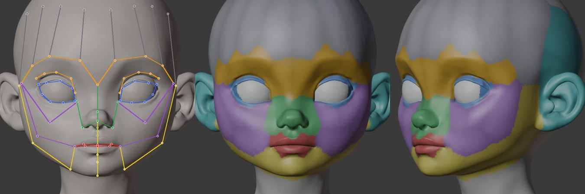
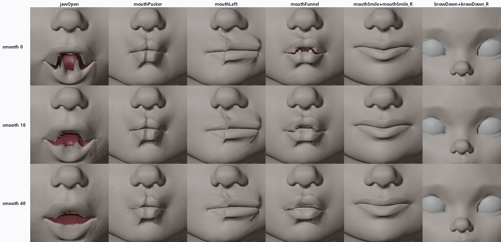
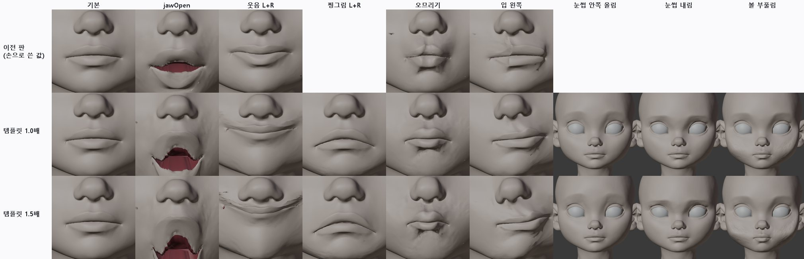
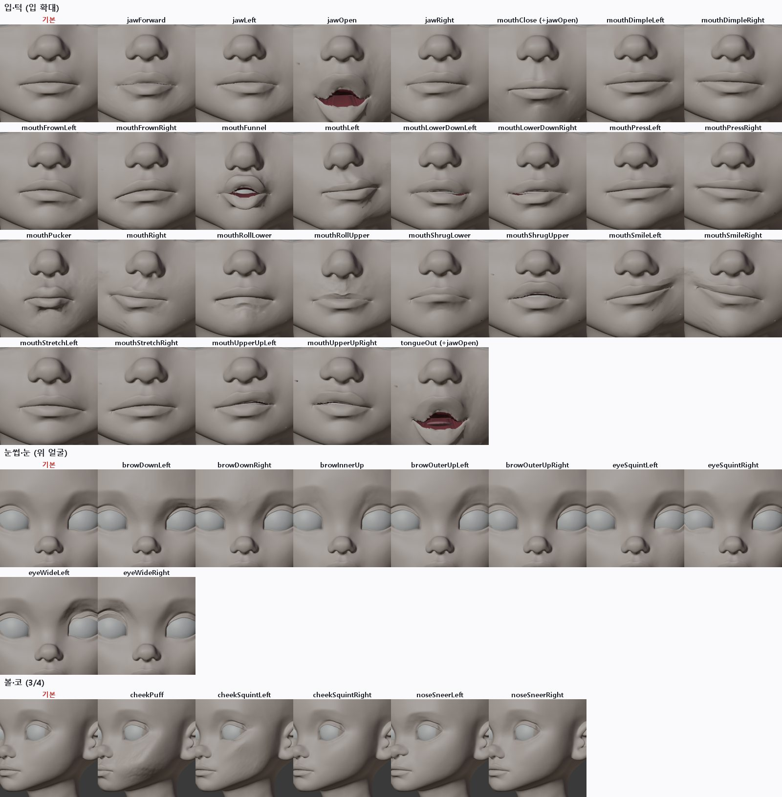
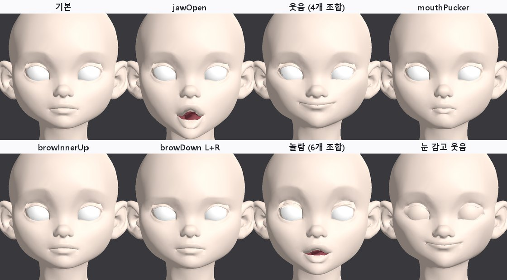

<title>T13 Rigify 얼굴 자동 리그</title>
<link rel="preconnect" href="https://fonts.googleapis.com">
<link rel="preconnect" href="https://fonts.gstatic.com" crossorigin>
<link rel="stylesheet" href="https://fonts.googleapis.com/css2?family=IBM+Plex+Mono:wght@400;500&family=IBM+Plex+Sans+KR:wght@400;500;600;700&display=swap">
<style>
/* Layout: one reading column; figures full width of the column */
:root{--bg:#F5F6F8;--paper:#fff;--ink:#1B1F27;--muted:#5B6473;--line:#DDE1E8;--soft:#EEF1F6;--accent:#2F5BD3;--good:#1E8A52;--bad:#C83A32;--warn:#B26A00;
--f-body:"IBM Plex Sans KR","Malgun Gothic",system-ui,sans-serif;--f-mono:"IBM Plex Mono",ui-monospace,Consolas,monospace}
@media (prefers-color-scheme: dark){:root:not([data-theme="light"]){--bg:#12151B;--paper:#191D25;--ink:#E5E8EE;--muted:#9BA4B3;--line:#2B313C;--soft:#20252F;--accent:#7FA2FF;--good:#5ACB8C;--bad:#FF6F66;--warn:#F0AE48;color-scheme:dark}}
:root[data-theme="dark"]{--bg:#12151B;--paper:#191D25;--ink:#E5E8EE;--muted:#9BA4B3;--line:#2B313C;--soft:#20252F;--accent:#7FA2FF;--good:#5ACB8C;--bad:#FF6F66;--warn:#F0AE48;color-scheme:dark}
*{box-sizing:border-box}
body{background:var(--bg);color:var(--ink);font-family:var(--f-body);font-size:16px;line-height:1.7}
main{max-width:920px;margin:0 auto;padding-inline:16px;padding-block:26px 60px}
h1{font-size:clamp(25px,4vw,33px);margin:0;line-height:1.25;text-wrap:balance}
.sub{color:var(--muted);margin:6px 0 0}
h2{font-size:21px;margin:38px 0 6px;text-wrap:balance}
h3{font-size:17px;margin:20px 0 4px}
p,ul,ol{max-width:72ch} li{margin:3px 0}
figure{margin:16px 0;background:var(--paper);border:1px solid var(--line);border-radius:12px;padding:12px}
figure img{display:block;width:100%;height:auto;border-radius:6px;background:#2a2a2e}
figure svg{display:block;width:100%;height:auto}
figcaption{font-size:14px;color:var(--muted);margin-top:8px}
figcaption b{color:var(--ink)}
.tbl{overflow-x:auto;margin:12px 0}
table{border-collapse:collapse;font-size:14.5px;min-width:540px;width:100%;background:var(--paper)}
th,td{border:1px solid var(--line);padding:6px 10px;text-align:left;vertical-align:top}
th{background:var(--soft)}
td.num{font-family:var(--f-mono);font-variant-numeric:tabular-nums;white-space:nowrap}
.good{color:var(--good);font-weight:600}.bad{color:var(--bad);font-weight:600}.warn{color:var(--warn);font-weight:600}
.box{background:var(--paper);border:1px solid var(--line);border-left:4px solid var(--accent);border-radius:0 10px 10px 0;padding:12px 16px;margin:14px 0}
code{font-family:var(--f-mono);font-size:13.5px;background:var(--soft);padding:1px 5px;border-radius:4px;overflow-wrap:anywhere}
svg text{font-family:var(--f-body)}
.s-ink{fill:var(--ink)}.s-muted{fill:var(--muted)}.s-paper{fill:var(--paper)}.s-soft{fill:var(--soft)}.s-acc{fill:var(--accent)}.s-good{fill:var(--good)}.s-bad{fill:var(--bad)}
.st-acc{stroke:var(--accent)}.st-good{stroke:var(--good)}.st-ink{stroke:var(--ink)}.st-muted{stroke:var(--muted)}.st-bad{stroke:var(--bad)}
</style>
<main>
<h1>T13 · Rigify 얼굴 리그 자동 맞춤 (Faceit 흐름을 무료로 무인 재현)</h1>
<p class="sub">2026-10-12 · character1 v3 원본 · Blender 4.5 내장 Rigify · 사람 손 없이 실행 · ARKit 52개 중 42개 셰이프키 + 눈 깜빡임 2개는 T1 부품 · 2판: 표정 크기를 CC0 템플릿에서 자동으로 가져옴</p>
<div class="box"><b>결론</b>
<ul>
<li><b>흐름은 끝까지 자동으로 됩니다.</b> 우리 기준점으로 Rigify 얼굴 메타리그를 맞추고, 리그를 생성하고, 가중치를 붙이고, 표정 42개를 셰이프키로 굽고, 10%로 줄여 Godot에서 재생했습니다. 사람이 점을 찍거나 누른 단계는 없습니다. 한 머리에 약 7분 걸립니다(가중치 다듬기 5분).</li>
<li><b>원본 모양은 그대로입니다.</b> 쉬는 자세의 차이는 0.0002mm(계산 오차)입니다. 좌우 표정은 거울로 비교해 95%가 3~15% 이내로 같습니다.</li>
<li><b>2판에서 표정이 잘 보이게 됐습니다.</b> 1판은 자세 값을 손으로 2~5mm로 작게 잡아서 대부분 무표정처럼 보였습니다. 2판은 원본 위에 맞춰 둔 CC0 MPFB 템플릿의 ARKit 표정에서 각 조종점이 몇 mm 움직이는지 자동으로 읽어 옵니다. 웃음 16mm, 볼 부풀림 19mm, 눈썹 내림 11mm 정도로 커졌습니다. 손으로 정한 값은 부위별 세기 3개뿐입니다(턱 0.7배, 입 1.0배, 눈썹·눈·볼·코 1.5배).</li>
<li><b>남은 품질 문제</b>: 턱 벌림 때 아랫입술 안쪽 면과 입술 경계의 들쭉날쭉함이 보이고, 눈썹은 이 머리에 눈썹 그림이 없어 약하게 읽힙니다.</li>
<li><b>Faceit과의 관계</b>: Faceit이 해 주는 일(얼굴 뼈, ARKit 자세, 굽기)을 무료로 재현했습니다. 그래서 Faceit은 이제 필수가 아니라 <b>품질 비교 기준</b>입니다. 자세 다듬기를 직접 하느냐, Faceit 프리셋을 사느냐의 선택입니다.</li>
</ul></div>

<h2>1. 순서</h2>
<figure>
<svg viewBox="0 0 860 260" role="img" aria-label="T13 순서">
  <g font-size="12.5">
    <rect x="6" y="20" width="196" height="84" rx="8" class="s-paper st-acc" stroke-width="1.5"/><text x="104" y="44" text-anchor="middle" class="s-ink" font-weight="600">① 메타리그 맞추기</text><text x="104" y="64" text-anchor="middle" class="s-muted">기준점 29쌍 → 닮음 변환</text><text x="104" y="82" text-anchor="middle" class="s-muted">+ 얇은 판 휨(TPS)</text><text x="104" y="98" text-anchor="middle" class="s-muted">눈·입술은 실제 테두리에</text>
    <rect x="222" y="20" width="196" height="84" rx="8" class="s-paper st-acc" stroke-width="1.5"/><text x="320" y="44" text-anchor="middle" class="s-ink" font-weight="600">② 리그 생성</text><text x="320" y="64" text-anchor="middle" class="s-muted">Rigify, 화면 없이</text><text x="320" y="82" text-anchor="middle" class="s-muted">뼈 338개 (조종 104)</text><text x="320" y="98" text-anchor="middle" class="s-muted">3초</text>
    <rect x="438" y="20" width="196" height="84" rx="8" class="s-paper st-acc" stroke-width="1.5"/><text x="536" y="44" text-anchor="middle" class="s-ink" font-weight="600">③ 가중치</text><text x="536" y="64" text-anchor="middle" class="s-muted">10배 키운 사본에서 자동 계산</text><text x="536" y="82" text-anchor="middle" class="s-muted">40회 다듬기, 목은 머리 뼈로</text><text x="536" y="98" text-anchor="middle" class="s-muted">약 5분</text>
    <rect x="654" y="20" width="200" height="84" rx="8" class="s-paper st-acc" stroke-width="1.5"/><text x="754" y="44" text-anchor="middle" class="s-ink" font-weight="600">④ 표정 자세 라이브러리</text><text x="754" y="64" text-anchor="middle" class="s-muted">42개, CC0 템플릿에서 자동</text><text x="754" y="82" text-anchor="middle" class="s-muted">조종 65개의 목표 위치</text><text x="754" y="98" text-anchor="middle" class="s-muted">부위별 세기만 손으로</text>
    <rect x="6" y="150" width="268" height="76" rx="8" class="s-paper st-acc" stroke-width="1.5"/><text x="140" y="176" text-anchor="middle" class="s-ink" font-weight="600">⑤ 셰이프키로 굽기</text><text x="140" y="196" text-anchor="middle" class="s-muted">자세 → 얼굴 계산 → 키 저장</text><text x="140" y="214" text-anchor="middle" class="s-muted">아랫니·혀도 함께, 약 1분</text>
    <rect x="294" y="150" width="268" height="76" rx="8" class="s-paper st-acc" stroke-width="1.5"/><text x="428" y="176" text-anchor="middle" class="s-ink" font-weight="600">⑥ 검사 + 10% 줄이기 (T6)</text><text x="428" y="196" text-anchor="middle" class="s-muted">원본 차이, 좌우 대칭, 뒤집힌 면</text><text x="428" y="214" text-anchor="middle" class="s-muted">키 49개 모두 유지</text>
    <rect x="582" y="150" width="272" height="76" rx="8" class="s-paper st-good" stroke-width="2"/><text x="718" y="176" text-anchor="middle" class="s-ink" font-weight="600">⑦ Godot</text><text x="718" y="196" text-anchor="middle" class="s-muted">키 조합 + T1 눈꺼풀 뼈</text><text x="718" y="214" text-anchor="middle" class="s-muted">놀람, 눈 감고 웃음 등</text>
    <path d="M202 62 H218 M418 62 H434 M634 62 H650 M754 104 V128 H140 V146 M274 188 H290 M562 188 H578" fill="none" class="st-muted" stroke-width="2"/>
    <text x="6" y="252" class="s-muted">입력은 T1·T2를 거친 원본 머리(눈·입 자르기, 눈꺼풀·입 안 부품)와 T4 자동 기준점입니다.</text>
  </g>
</svg>
<figcaption><b>그림 1.</b> 처리 순서. Faceit이 GUI로 하는 일(점 맞추기 → 얼굴 리그 → ARKit 자세 → 굽기)과 같은 순서입니다.</figcaption>
</figure>

<h2>2. 뼈 맞추기와 가중치</h2>
<figure><figcaption><b>그림 2.</b> 왼쪽: 맞춘 얼굴 뼈(파랑 눈꺼풀, 빨강 입술, 주황 눈썹, 초록 코, 보라 볼, 노랑 턱, 회색 이마). 가운데·오른쪽: 각 점을 가장 많이 움직이는 뼈 부위로 칠한 가중치. 눈꺼풀 뼈는 T1과 같은 깊이 테두리 위에, 입술 뼈는 입술 경계 바로 위·아래에 놓입니다.</figcaption></figure>
<div class="tbl"><table>
<tr><th>메타리그 관절</th><th>우리 점</th><th>방법</th></tr>
<tr><td>눈꺼풀 고리 8점 × 2</td><td>깊이로 찾은 눈 테두리 (눈꼬리 2 + 위 3 + 아래 3)</td><td>테두리 위에 정확히</td></tr>
<tr><td>위 눈썹 3점 × 2</td><td>MediaPipe 눈썹 1~6</td><td>TPS + 표면에 붙이기</td></tr>
<tr><td>코끝, 입꼬리 2, 윗·아랫입술 가운데, 턱 끝, 정수리</td><td>16, 20, 22, 34/35 ±3.5mm, 24, 31</td><td>TPS + 표면에 붙이기</td></tr>
<tr><td>턱 뼈</td><td>T2에서 구한 턱 회전축 → 턱 끝</td><td>그대로</td></tr>
<tr><td>눈알, 이, 혀</td><td>눈알 중심, 우리 이·혀 부품</td><td>그대로</td></tr>
<tr><td>나머지 (볼, 이마, 관자놀이, 귀)</td><td>위 29쌍으로 만든 휨을 따라감</td><td>TPS + 표면에 붙이기, 좌우 평균으로 정확히 대칭</td></tr>
</table></div>
<h3>가중치에서 막힌 것과 해결</h3>
<ul>
<li><b>자동 가중치 실패</b>: Blender의 자동 가중치가 "해를 찾지 못함"으로 모든 점에서 실패했습니다. 머리 높이 24cm가 계산에는 너무 작은 크기였습니다. 10배 키운 사본에서 계산하고 같은 점 번호로 옮기자 22초 만에 모든 점에 붙었습니다.</li>
<li><b>V자 턱</b>: 자동 가중치는 뼈 사이 경계가 날카로워 턱을 벌리면 아랫입술이 V자로 꺾였습니다. 40회 이웃 평균으로 다듬자(Faceit에도 있는 단계) 타원으로 벌어졌습니다. 입술·눈 경계는 잘려 있어서 다듬어도 위아래가 섞이지 않습니다.</li>
<li><b>어깨 끌림</b>: 다듬으면서 턱 영향이 목·어깨로 번져 턱을 벌리면 어깨가 2cm 내려갔습니다. 턱 끝 아래 45mm 구간에서 얼굴 뼈 영향을 서서히 없애고 머리 뼈(움직이지 않음)로 넘겼습니다. 턱 벌림의 뒤집힌 면이 438개에서 56개로 줄었습니다.</li>
</ul>
<figure><figcaption><b>그림 3.</b> 가중치 다듬기 0 / 10 / 40회 비교(자세 조정 전 버전). 40회에서 턱 벌림이 V자에서 타원이 되고 웃음이 부드러워집니다.</figcaption></figure>

<h2>3. 표정 자세 라이브러리</h2>
<p>각 표정은 "조종 뼈 65개를 각각 어디로 보내는가"의 목록입니다.</p>
<h3>1판: 손으로 쓴 값 (작아서 실패)</h3>
<p>웃음(왼쪽)을 입꼬리 (+3, +3, +5)mm처럼 손으로 적었습니다. 24cm 머리에서 2~5mm는 너무 작아서 시트에서 대부분 무표정처럼 보였습니다.</p>
<h3>2판: 템플릿에서 자동으로 읽기</h3>
<ol>
<li>face_fit 단계에서 CC0 MPFB 머리 템플릿(ARKit 52개 포함)을 이미 원본 위에 맞춰 두었습니다. 원본 모양은 바꾸지 않고 템플릿만 맞춘 것입니다.</li>
<li>각 조종 뼈 위치에서 가장 가까운 템플릿 표면 점을 찾고, 그 점이 각 ARKit 키에서 움직이는 양을 원본 크기로 바꿔 조종 뼈의 목표로 씁니다. 윗입술 조종은 1.2mm 위, 아랫입술 조종은 1.2mm 아래에서 찾아 위아래 입술이 섞이지 않게 했습니다.</li>
<li>턱은 턱 끝 조종이 템플릿 턱 끝을 따라가도록 회전 각도를 풉니다.</li>
<li>Rigify 입·볼 조종은 옆 조종을 50%씩 따라가도록 묶여 있어서 위치를 바로 지정하면 최대 17mm 어긋났습니다. 그래서 각 조종의 "1mm 움직였을 때 실제 이동"을 미리 재고, 그 비율로 한 개씩 고쳐 가며(끌려가는 쪽은 나중에) 맞췄습니다. 대부분 1.5mm 이내로 맞고, 서로 따라가는 코 조종 한 쌍은 가장 좋았던 단계에서 멈춥니다.</li>
<li>키 이름은 ARKit 표준 이름(<code>mouthSmileLeft</code> 등)을 그대로 씁니다.</li>
</ol>
<div class="tbl"><table>
<tr><th>묶음</th><th>표정</th><th>개수</th></tr>
<tr><td>턱</td><td>jawOpen, jawForward, jawLeft, jawRight</td><td class="num">4</td></tr>
<tr><td>입</td><td>Smile, Frown, Dimple, Stretch, Press, LowerDown, UpperUp (각 L/R), Funnel, Pucker, Left, Right, RollLower/Upper, ShrugLower/Upper, Close</td><td class="num">23</td></tr>
<tr><td>눈썹·볼·코</td><td>browDown L/R, browInnerUp, browOuterUp L/R, cheekPuff, cheekSquint L/R, noseSneer L/R</td><td class="num">10</td></tr>
<tr><td>눈</td><td>eyeSquint L/R, eyeWide L/R</td><td class="num">4</td></tr>
<tr><td>혀</td><td>tongueOut</td><td class="num">1</td></tr>
<tr><td class="warn">셰이프키 아님</td><td>eyeBlink L/R → T1 눈꺼풀 부품(뼈). eyeLook 8개 → 눈알 뼈 회전</td><td class="num">10</td></tr>
</table></div>
<p>템플릿에는 혀 키가 없어 <code>tongueOut</code>만 직접 정했습니다. <code>mouthClose</code>는 ARKit 규칙대로 "턱 10° + 입술 붙이기"에서 "턱 10°"를 뺀 보정 키로 굽습니다. <code>tongueOut</code>도 "턱 16° + 혀 내밀기"에서 "턱 16°"를 뺀 혀만의 키라서 <code>jawOpen</code>과 함께 켭니다. 처음에는 혀 키 안에 턱 회전을 넣었더니, 두 키를 같이 켤 때 턱이 두 번 돌아 혀가 턱 아래로 뚫고 나왔습니다.</p>

<h2>4. 결과</h2>
<figure><figcaption><b>그림 4.</b> 위: 1판(손으로 쓴 값). 가운데: 템플릿 크기 그대로(1.0배). 아래: 1.5배. 1판은 웃음·오므리기·입 이동이 거의 보이지 않습니다. 템플릿 값은 바로 읽힙니다. 1.5배는 입 주변이 찢어져 보여서 입은 1.0배, 턱은 0.7배, 위 얼굴만 1.5배로 정했습니다.</figcaption></figure>
<figure><figcaption><b>그림 5.</b> 2판 42개 전체를 부위별로 확대했습니다(빨간 글씨가 각 부위의 기본 모습). mouthClose와 tongueOut은 jawOpen과 함께 쓰는 보정 키라서 jawOpen을 켠 상태로 보여 줍니다. 보조개·입술 누르기·코 찡그림·눈 찡그림은 원래 작은 표정이라 차이가 작습니다.</figcaption></figure>
<div class="tbl"><table id="qa">
<tr><th>검사</th><th>결과</th></tr>
<tr><td>쉬는 자세 원본 차이</td><td class="num good">0.0002mm</td></tr>
<tr><td>가중치 없는 점</td><td class="num good">0 / 93,816</td></tr>
<tr><td>좌우 대칭 (거울 비교 95%, 움직임 대비)</td><td class="num">2.1~8.8% (eyeWide만 55%: 템플릿 쪽 눈 모양 차이)</td></tr>
<tr><td>조종 뼈가 목표에 못 미친 거리 (최대)</td><td class="num">4.1mm (대부분 1.5mm 이내)</td></tr>
<tr><td>뒤집힌 면이 10개 넘는 표정</td><td class="num">mouthClose 215, mouthRollUpper 75, cheekSquintLeft 28, mouthSmileRight 18 (42개 합계 393, 대부분 입술 경계)</td></tr>
<tr><td>10% 줄인 뒤 원본과 차이 (키 49개 중 최대 95%)</td><td class="num">0.081mm (삼각형 18,727개)</td></tr>
</table></div>

<h2>5. Godot에서 확인</h2>
<figure><figcaption><b>그림 6.</b> 10%로 줄인 머리(5.8MB, 키 49개)를 Godot 4.7에 불러와 조합했습니다. "놀람"은 6개 키, "눈 감고 웃음"은 웃음 키 4개 + T1 눈꺼풀 뼈입니다. ARKit 표준 이름이라 얼굴 추적 앱이나 Audio2Face 같은 도구의 값을 바로 넣을 수 있습니다. 웃음과 오므리기는 이 거리에서도 보이고, 눈썹은 눈썹 그림이 없어 약하게 보입니다.</figcaption></figure>

<h2>6. 평가</h2>
<div class="tbl"><table>
<tr><th>잘 되는 것</th><th>부족한 것</th></tr>
<tr><td>
<ul>
<li>사람 손 없이 끝까지 실행 (약 7분)</li>
<li>원본 모양 유지, 정확한 좌우 대칭 뼈</li>
<li>표정 크기를 템플릿에서 자동으로 가져옴 (손 값은 부위별 세기 3개)</li>
<li>웃음·찡그림·오므리기·입 모으기·입 이동·볼 부풀림·눈썹이 구분됨</li>
<li>ARKit 이름 42개 + 깜빡임 뼈, 조합 재생</li>
<li>T6 줄이기와 바로 이어짐</li>
</ul></td><td>
<ul>
<li>입술 경계의 들쭉날쭉함 (원본을 자른 경계, T2와 같은 문제)</li>
<li>턱 벌림 때 아랫입술 안쪽 면이 피부색으로 드러남 (텍스처를 입히면 입술 색)</li>
<li>눈썹 그림이 없어 눈썹 표정이 약하게 읽힘</li>
<li>eyeWide 좌우 차이 (55%)</li>
<li>왼쪽 볼에 작은 검은 점 1개 (원인 확인 필요)</li>
<li>혀 내밀기는 아랫입술 위까지만 나옴</li>
<li>시선 8개는 아직 안 함</li>
</ul></td></tr>
</table></div>

<h2>7. 다음 단계</h2>
<ul>
  <li><b>텍스처 입혀 보기</b>: 원본 Tripo 텍스처(입술 색, 눈썹)를 입혀야 표정이 실제로 어떻게 읽히는지 알 수 있습니다.</li>
<li><b>입술 경계 다듬기</b>: 들쭉날쭉한 입술 자른 선을 매끈하게 하는 것이 입 표정 품질에 가장 큽니다(T2 남은 일).</li>
  <li><b>T7 스캔과 합치기</b>: "아"는 스캔 기반 키(<code>aa_scan</code>)가 더 좋았습니다. 표정마다 더 좋은 쪽을 고르는 방식이 가능합니다.</li>
  <li><b>다른 머리에 적용</b>: 입력 검사(T5)를 통과한 새 머리로 같은 명령을 돌려 정말 손 없이 되는지 확인합니다.</li>
  <li><b>Faceit</b>: 사면 같은 머리로 Faceit 결과와 나란히 비교해 자세 값을 맞추는 기준으로 씁니다. 필수는 아닙니다.</li>
</ul>

<h2>8. 파일</h2>
<ul>
  <li><code>tools/face_auto/rigify_fit.py</code>: 메타리그 맞추기, 리그 생성, 가중치(10배 사본, 다듬기, 목 처리), 이·혀 연결, 쉬는 자세 검사</li>
  <li><code>tools/face_auto/rigify_bake.py</code>: 자세 라이브러리(<code>--mpfb</code>: 템플릿에서 자동, 없으면 1판 손 값), 부위별 세기(<code>--k-jaw</code>, <code>--k-upper</code>), 조종 뼈 맞추기, 굽기, 좌우 대칭·뒤집힌 면·조종 오차 검사, 내보내기용 파일</li>
  <li>결과(임시 폴더 <code>t13/</code>): <code>fit/rigify_fit.blend</code>(리그), <code>bake/arkit_rig.blend</code>, <code>bake/arkit.blend</code>, <code>lod/lod_10.blend</code>, Godot 시험 <code>t13/godot</code></li>
</ul>
</main>
